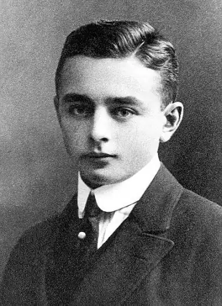
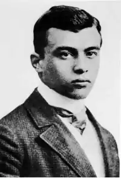

ГЕЙМ, Георг (Heym, Georg — 30.10.1887, Гіршберг 16.1. 1912, Берлін — німецький поет.Гейм — німецький експресіоніст, творчий шлях якого обмежується неповними трьома роками.
Сам Гейм називав себе "німецьким Рембо". Можливо, доля митця означилася вибором такого зразка — поетичне життя А. Рембо було яскравим і коротким. Гейм навчався на юриста, але, так і не здобувши освіти, подався у столицю. Там він зазнайомився із творчою молоддю, разом з іншими юними поетами виступаючи в літературних кабаре Берліна. У 1900-х pp. у мистецтві Німеччини зародився експресіонізм. Поезія Гейма стала голосом цього напряму.
Так трапилося, що перша збірка Гейма "Вічний день" ("Derewige Tag", 1910-1911) стала й останньою прижиттєвою книгою поета. Агресивна образність експресіонізму — "візитівка" книги. Для Гейма метафора перестає бути "образним засобом", вона "реалізується" у віртуальній дійсності. Виникає паралельний світ — фантастичний, фантасмагорійний, побудований на абсурді та гротеску. Та за цією химерною фантазією приховане сучасне Гейма життя. Поет відчував апокаліптичні настрої своєї епохи; місто стає головним героєм "Вічного дня". Великі міста колінкують перед черевом Ваала; величезні демони бредуть по морю дахів, намацуючи будинки, задуваючи світло, засуваючи руки в людську гущу, як у драглисте болото; вони пильнують породіллю, лоно якої змикається, а новонароджений малюк, облившись кров'ю, розривається навпіл. На землі, поміж кварталів, розчавлених у пилюці, — мешканці міста, напівпримарний натовп приречених людей. Бідні, сліпі, божевільні, голодні... А у небі хмари перетворюються у рухому низку потопельників, вішальників, мертвонароджених. Світ несе людині загибель. Природа байдужа до страждань людей. Пленерний пейзаж такий же катастрофічний, як і міський. У вірші "Сплячий у лісі", навіяному Ш. Бодлером, герой — мертв'як із проламаним черепом, мозок якого стає святковою стравою для черв'яків. Метелик, що залітає у кривавий пролом, впевнений, що це — "оксамит троянди", "бутон квітки". Апокаліптичною є й історія. У сонетах Гейма воскресає епоха кривавих тортур, торжества гільйотини. Образ Офелії, котра пливе у глибині річки повз підйомні крани, сталеві мости, вищання машин, стає символом загибелі прекрасного — замість квітки у волоссі Офелії гніздо болотного щура. Друга книга віршів Гейма вийшла друком уже після смерті автора — "Тінь життя" ("Umbra vitae", 1912). Головні мотиви цієї збірки колишні: місто — "похмурий морг", поля — "голі пустелі", довкола — "маска смерті". Але, на відміну від першої книги, тут з'являється "я" ліричного героя, що свідчить про перехід поета від експресивної мови до екзистенційної. "Я" поезії Гейма може бути представлене і як "ми", і як "він", але це завжди вираження його власного стану, коли життя — цілковита безвихідь. У "Тіні життя" виникає тема самогубства, завжди пов'язана з водою: Не витріщай очисьок, жабо, прийшовпомерти я сюди.Не тріпочися, очерете, і не хвилюйгладінь води...Вночі повіє прохолода — злилися тінівже давно.Я ще важкий і сірий камінь, що тихо падає на дно.І дотик риб, що пропливають,уже далеко від землі.Усе, усі ви прощавайте — мости,хмарини, кораблі.Коли влітку 1911 року Гейм познайомився з 19-річною Хільдегардою Крон, котра стала його коханою в останні півроку життя, він і почуття до неї порівнював із загибеллю у воді: Вир довгих чорних вій твоїх,Очей безмежна глибина —Дозволь зануритися в них,Дай досягнути аж до дна.Любовна поезія Гейма сповнена естетики смерті. Поцілунки — червоні кинджали, що вцілюють просто у серце, а вежа "під містом Місяця", у якій ховаються закохані, — притулок забуття, де "багряні губи" дають "напитися вічного сну". Есхатологічні мотиви не зникають у його творах, а стають домінантою його творчості. Гейм не кличе смерть, але відчуває її присутність у кожному явищі життя. За кілька днів до катастрофи він написав похмурий вірш — про місто у променях заходу ("Вечірніх міст вибоїсті провулки"). Герой і його кохана бачать, як "двоє в жовтому" несуть їхні відрізані голови. Життя на очах перетворюється у смерть. 16 січня 1912 р. так трапилося і з Геймом — він провалився під кригу на річці Хафель в околицях Берліна. За Є. Абрамовських